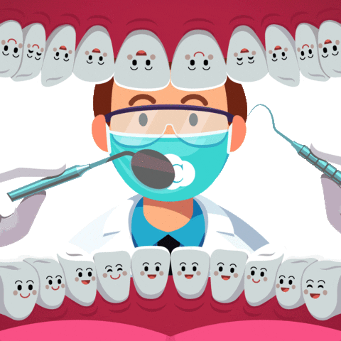

Es un error no preocuparnos de ello hasta que los niños son
bastante grandes y tienen dientes permanentes. Es necesario llevar
a los niños al dentista desde muy temprana edad, puesto que existen
dentistas especializados en odontología pediátrica que saben exactamente
cómo tratarlos sin causarles ningún tipo de daño, trauma o miedo.
¿Por qué es importante que los niños vayan al dentista?
- Fomentar una buena salud bucal
- Detección temprana de los problemas
- Seguimiento de los dientes de leche
- Entre otros
Ahora ya eres consciente de la importancia de llevar a los niños al dentista.
Eligenos como tu opcion somos especialistas en niños, y con una gran trayectoria

Nuestros tratamientos están diseñados para cubrir las necesidades específicas de cada paciente.